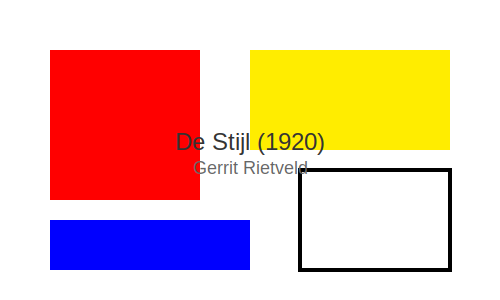
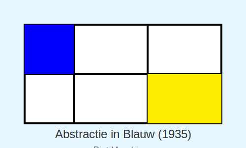
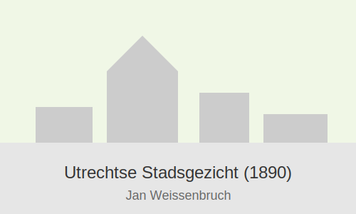
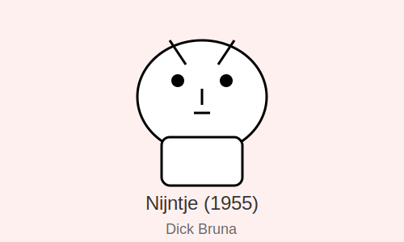

Het Centraal Museum heeft een uitgebreide collectie van moderne kunst, design, en historische artefacten. Onze collectie omvat werken van bekende Nederlandse kunstenaars en ontwerpers.
Moderne Kunst
Ontdek onze collectie moderne kunst met werken van toonaangevende kunstenaars uit de 20e en 21e eeuw.
Design & Mode
Verken onze uitgebreide collectie design en mode, met bijzondere aandacht voor Nederlandse ontwerpers.
Hoogtepunten uit onze collectie

De Stijl (1920)
Gerrit Rietveld

Abstractie in Blauw (1935)
Piet Mondriaan

Utrechtse Stadsgezicht (1890)
Jan Weissenbruch

Nijntje (1955)
Dick Bruna